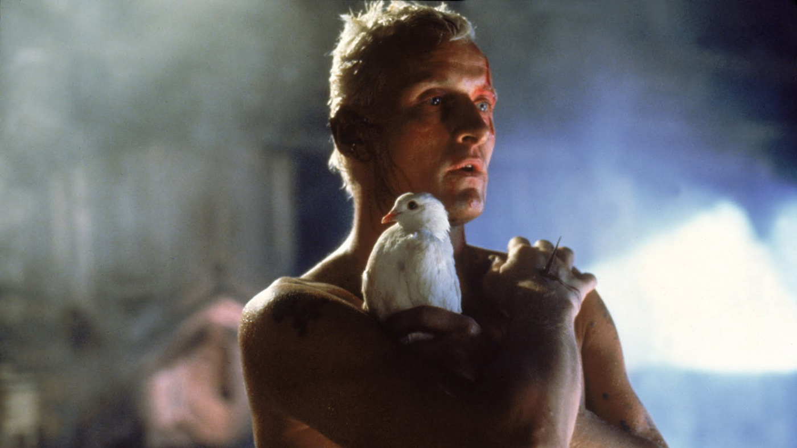

CiberCinema
Inicio
Digital
Videojuegos
Listas y Rankings
Críticas
Series
Contacto
CiberCinema.com
Curiosidades de la historia del cine
Las mejores frases de la historia del cine
Las mejores escenas de la historia del cine

Las mejores actuaciones de la historia del cine
Críticas de últimos estrenos
Críticas de películas del siglo 21
Críticas de películas del siglo 20
Las 40 mejores películas de la historia
Los 10 mejores directores de la historia
Las 15 mejores bandas sonoras de la historia